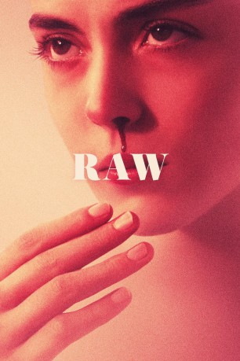
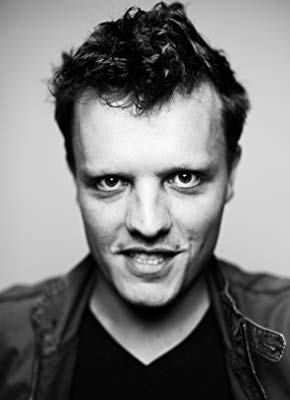

#6635 Raw
 
 IMDB-Wertung: 7.2 / 10
IMDB-Wertung: 7.2 / 10  Metascore: 0
Metascore: 0 
Justine (Garance Marillier) ist 16 Jahre alt und alle in ihrer Familie sind sowohl Tierärzte als auch Vegetarier. Daher ist es ganz klar, dass auch die Teenagerin diesen Weg einschlägt. Doch direkt an ihrem ersten Tag auf der tierärztlichen Hochschule weicht sie von den Prinzipien ihrer Familie ab und genehmigt sich ein Stück Fleisch - ein Moment, der Justines wahre Natur zum Vorschein bringt.
Jahr: 2016
Dauer: 98 Minuten
FSK: 16
Land: Frankreich Studio: Universal PicturesTonspuren:
Untertitel: Deutsch,
Auflösung: 1080p (1920x808) Größe: 3051 MB
Genre: Horror, Drama
Regisseur: Julia Ducournau
Drehbuch: Julia Ducournau
Soundtrack:
Darsteller:
- Garance Marillier als Justine
- Ella Rumpf als Alexia
- Laurent Lucas als Le père
- Joana Preiss als La mère
 Bouli Lanners als Le routier
Bouli Lanners als Le routier- Jean-Louis Sbille als Professeur évaluations
- Rabah Nait Oufella als Adrien
- Marion Vernoux als L'Infirmière
- Thomas Mustin als Chef du BDE
- Marouan Iddoub als Bizut réfectoire
- Benjamin Boutboul als Vétéran cagoulé
- Virgil Leclaire als Bizut couloir / Foot / Fin Coryphée
- Anna Solomin als Vétérane couloir
- Sophie Breyer als Bizute réfectoire
- Danel Utegenova als Bizute toilettes
- Bérangère McNeese als Bizute peinture
- Morgan Politi als Barman fête CHU
- Alice D'Hauwe als Etudiante fête CHU
-  Pierre Nisse als Etudiant vidéo fête CHU morgue
- Maïté Katinka Lonne als Bizute amphithéâtre
- Amandine Hinnekens als Vétérane pistolet à eau
- Sibylle du Plessy als Professeur autopsie
- Denis Mpunga als Professeur amphithéâtre
- Alexis Julemont als Interne urgences
- Lich Jaas als Cantinière restauroute
- Helena Coppejans als Caissière réfectoire
- Charlotte Sandersen als Professeur anesthésie cheval
- Christophe Menier als Vétéran étable
Datei: X:\2016(N-Z)\Raw (2016, FSK16, 1920x808).mkv seit 28.07.2017
Festplatte: HD 2016(A-Z)
 Es gibt insgesamt 182 Filme in der Gruppe '2016(N-Z)'
Es gibt insgesamt 182 Filme in der Gruppe '2016(N-Z)'